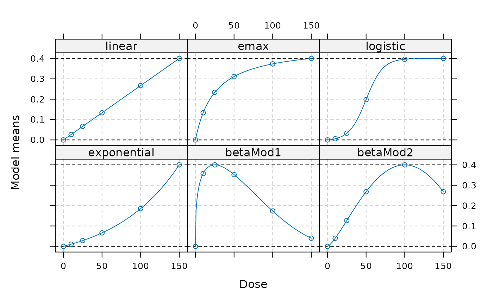

Calculate power for a multiple contrast test for a set of specified alternatives.
Usage
powMCT(
contMat,
alpha = 0.025,
altModels,
n,
sigma,
S,
placAdj = FALSE,
alternative = c("one.sided", "two.sided"),
df,
critV = TRUE,
control = mvtnorm.control()
)Arguments
- contMat
Contrast matrix to use. The individual contrasts should be saved in the columns of the matrix
- alpha
Significance level to use
- altModels
An object of class Mods, defining the mean vectors under which the power should be calculated
- n, sigma, S
Either a vector n and sigma or S need to be specified. When n and sigma are specified it is assumed computations are made for a normal homoscedastic ANOVA model with group sample sizes given by n and residual standard deviation sigma, i.e. the covariance matrix used for the estimates is thus
sigma^2*diag(1/n)and the degrees of freedom are calculated assum(n)-nrow(contMat). When a single number is specified for n it is assumed this is the sample size per group and balanced allocations are used.When S is specified this will be used as covariance matrix for the estimates.
- placAdj
Logical, if true, it is assumed that the standard deviation or variance matrix of the placebo-adjusted estimates are specified in sigma or S, respectively. The contrast matrix has to be produced on placebo-adjusted scale, see
optContr, so that the coefficients are no longer contrasts (i.e. do not sum to 0).- alternative
Character determining the alternative for the multiple contrast trend test.
- df
Degrees of freedom to assume in case S (a general covariance matrix) is specified. When n and sigma are specified the ones from the corresponding ANOVA model are calculated.
- critV
Critical value, if equal to TRUE the critical value will be calculated. Otherwise one can directly specify the critical value here.
- control
A list specifying additional control parameters for the qmvt and pmvt calls in the code, see also mvtnorm.control for details.
References
Pinheiro, J. C., Bornkamp, B., and Bretz, F. (2006). Design and analysis of dose finding studies combining multiple comparisons and modeling procedures, Journal of Biopharmaceutical Statistics, 16, 639–656
Examples
## look at power under some dose-response alternatives
## first the candidate models used for the contrasts
doses <- c(0,10,25,50,100,150)
## define models to use as alternative
fmodels <- Mods(linear = NULL, emax = 25,
logistic = c(50, 10.88111), exponential= 85,
betaMod=rbind(c(0.33,2.31),c(1.39,1.39)),
doses = doses, addArgs=list(scal = 200),
placEff = 0, maxEff = 0.4)
## plot alternatives
plot(fmodels)

## power for to detect a trend
contMat <- optContr(fmodels, w = 1)
powMCT(contMat, altModels = fmodels, n = 50, alpha = 0.05, sigma = 1)
#> linear emax logistic exponential betaMod1 betaMod2
#> 0.7015660 0.6849209 0.8519343 0.6711498 0.7338515 0.6775027
if (FALSE) { # \dontrun{
## power under the Dunnett test
## contrast matrix for Dunnett test with informative names
contMatD <- rbind(-1, diag(5))
rownames(contMatD) <- doses
colnames(contMatD) <- paste("D", doses[-1], sep="")
powMCT(contMatD, altModels = fmodels, n = 50, alpha = 0.05, sigma = 1)
## now investigate power of the contrasts in contMat under "general" alternatives
altFmods <- Mods(linInt = rbind(c(0, 1, 1, 1, 1),
c(0.5, 1, 1, 1, 0.5)),
doses=doses, placEff=0, maxEff=0.5)
plot(altFmods)
powMCT(contMat, altModels = altFmods, n = 50, alpha = 0.05, sigma = 1)
## now the first example but assume information only on the
## placebo-adjusted scale
## for balanced allocations and 50 patients with sigma = 1 one obtains
## the following covariance matrix
S <- 1^2/50*diag(6)
## now calculate variance of placebo adjusted estimates
CC <- cbind(-1,diag(5))
V <- (CC)%*%S%*%t(CC)
linMat <- optContr(fmodels, doses = c(10,25,50,100,150),
S = V, placAdj = TRUE)
powMCT(linMat, altModels = fmodels, placAdj=TRUE,
alpha = 0.05, S = V, df=6*50-6) # match df with the df above
} # }